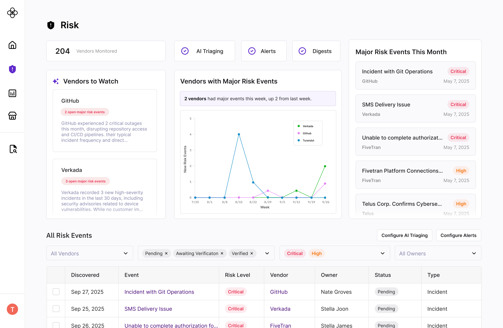
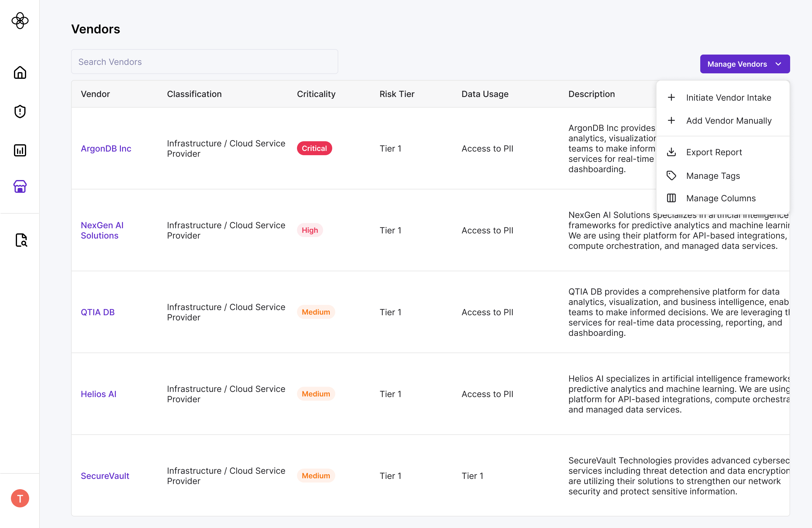

As we deepened our due diligence work, two distinct risk manager profiles emerged.
“I'm just getting started building our risk program. I don't know what 'good' looks like yet, and I'm hoping Clarative can be my one-stop shop for risk and compliance.”
"I already have a mature risk program and existing tools. Due to overhead / change management, I can't replace everything with Clarative, but your AI-forward tools like Due Diligence Evidence Review are compelling on their own."
Avery was the cleaner design anchor. But Zakiah had more budget and represented stronger long-term growth. We couldn't design for one and ignore the other.
Design a due diligence suite that works as a fully interconnected workflow for Avery, while still delivering real standalone value for Zakiah — without the product feeling incoherent to either.
We seriously evaluated three directions. A fully unified platform would have created the cleanest end-to-end experience for Avery but lacked the flexibility Zakiah required and carried real risk if the all-in-one workflow didn't resonate. Composable workflow blocks were flexible but threatened to turn Clarative into an orchestration platform — exactly what we didn't want to be, and deeply confusing for Avery who came to us for a clear definition of "what good looks like."
We landed on a modular architecture: a coherent full-suite experience customers could also use in pieces.
Modular architecture meant our data models and user-facing labels needed to be configurable enough for integrations while still feeling opinionated within our own platform. On the vendor table, for example, we allowed users to manage their own columns and views to accommodate different internal tagging systems — a small but meaningful flexibility that made Zakiah's integration path viable without cluttering Avery's experience.

For Avery specifically, we made sure out-of-the-box templates got them 95% of the way there - for example, we had common regulatory requirements baked into the product - since part of our value-add is providing a ready-made risk tool.
For Zakiah specifically, we designed thoughtful on and off ramps: easy data import from existing tools, configurable field labels to match internal terminology (vendor vs. supplier vs. service provider), and clean data export back into their stack. We also built a developer API portal to support bidirectional data flow, and allowed any configuration to be as complex as needed to suit their needs.
The beauty of modular architecture is that we aren't enforcing a perfect system. We're creating enough structure to guide Avery, while leaving space for Avery & Zakiah to show us what the product needs to become.
It was always fascinating what parts they would latch onto - for example, our AI document summarization and extraction features. We intentionally surfaced “chat with my documents” everywhere, then observed where users naturally reached for it. Their behavior guided where and how we more deeply and intentionally embedded AI chat into the workflow.